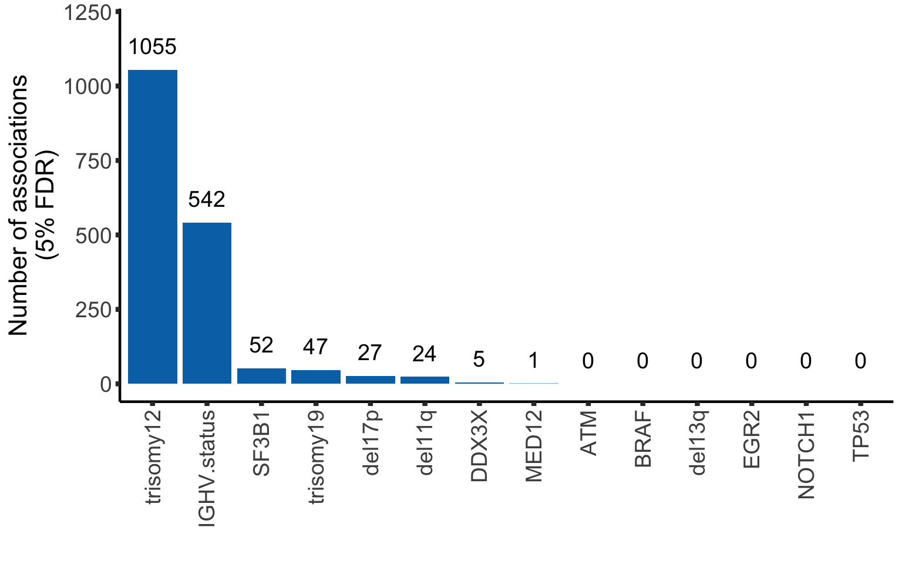
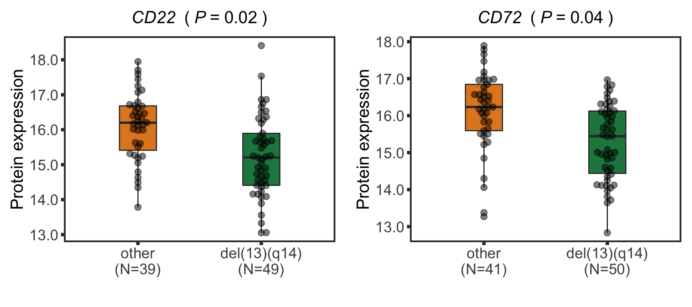
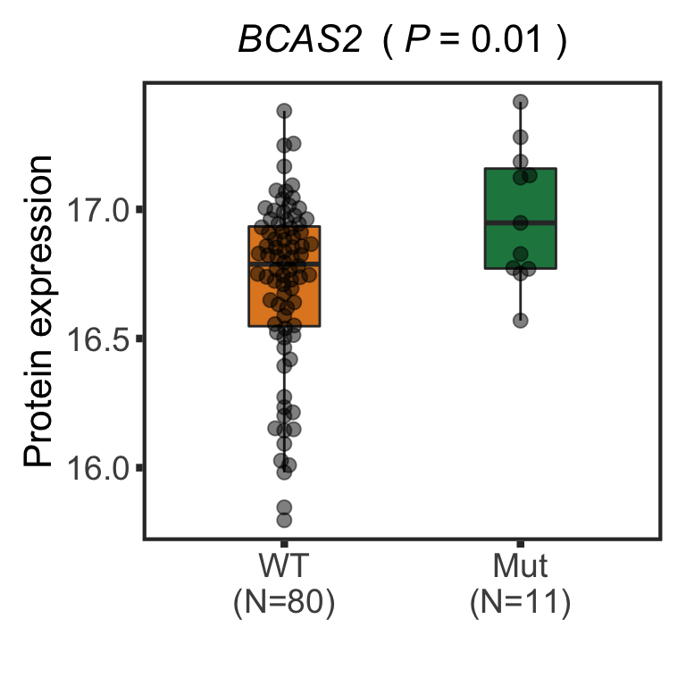
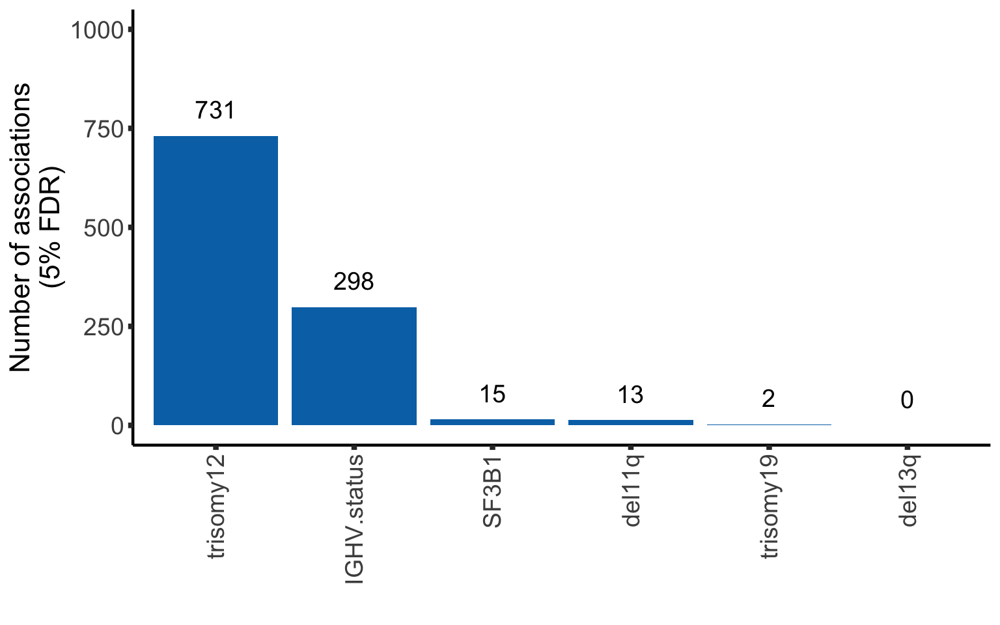
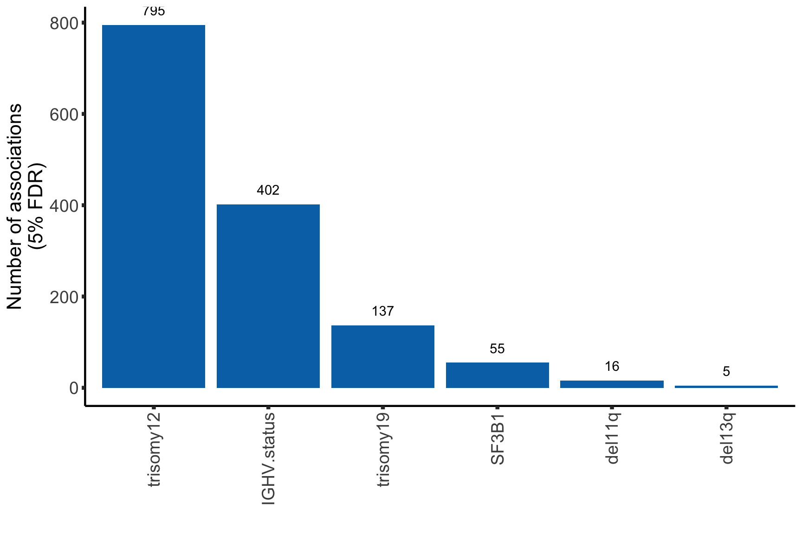

Last updated: 2021-05-05
Checks: 5 2
Knit directory: CLLproteomics_publish_revision/analysis/
This reproducible R Markdown analysis was created with workflowr (version 1.6.2). The Checks tab describes the reproducibility checks that were applied when the results were created. The Past versions tab lists the development history.
The R Markdown is untracked by Git. To know which version of the R Markdown file created these results, you’ll want to first commit it to the Git repo. If you’re still working on the analysis, you can ignore this warning. When you’re finished, you can run wflow_publish to commit the R Markdown file and build the HTML.
Great job! The global environment was empty. Objects defined in the global environment can affect the analysis in your R Markdown file in unknown ways. For reproduciblity it’s best to always run the code in an empty environment.
The command set.seed(20200227) was run prior to running the code in the R Markdown file. Setting a seed ensures that any results that rely on randomness, e.g. subsampling or permutations, are reproducible.
Great job! Recording the operating system, R version, and package versions is critical for reproducibility.
To ensure reproducibility of the results, delete the cache directory manuscript_S2_genomicAssociation_cache and re-run the analysis. To have workflowr automatically delete the cache directory prior to building the file, set delete_cache = TRUE when running wflow_build() or wflow_publish().
Great job! Using relative paths to the files within your workflowr project makes it easier to run your code on other machines.
Great! You are using Git for version control. Tracking code development and connecting the code version to the results is critical for reproducibility.
The results in this page were generated with repository version 3fb50c5. See the Past versions tab to see a history of the changes made to the R Markdown and HTML files.
Note that you need to be careful to ensure that all relevant files for the analysis have been committed to Git prior to generating the results (you can use wflow_publish or wflow_git_commit). workflowr only checks the R Markdown file, but you know if there are other scripts or data files that it depends on. Below is the status of the Git repository when the results were generated:
Ignored files:
Ignored: .DS_Store
Ignored: .Rhistory
Ignored: .Rproj.user/
Ignored: analysis/.DS_Store
Ignored: analysis/.Rhistory
Ignored: analysis/manuscript_S1_Overview_cache/
Ignored: analysis/manuscript_S2_genomicAssociation_cache/
Ignored: code/.DS_Store
Ignored: code/.Rhistory
Ignored: data/.DS_Store
Ignored: output/.DS_Store
Untracked files:
Untracked: analysis/.trisomy12_norm.pdf
Untracked: analysis/cohortComposition_all.pdf
Untracked: analysis/manuscript_S1_Overview.Rmd
Untracked: analysis/manuscript_S2_genomicAssociation.Rmd
Untracked: analysis/manuscript_S3_trisomy12.Rmd
Untracked: analysis/manuscript_S4_trisomy19.Rmd
Untracked: analysis/manuscript_S5_IGHV.Rmd
Untracked: analysis/manuscript_S6_del11q.Rmd
Untracked: analysis/manuscript_S7_SF3B1.Rmd
Untracked: analysis/manuscript_S8_drugResponse_Outcomes.Rmd
Untracked: analysis/manuscript_S9_STAT2.Rmd
Untracked: analysis/plot_PC1_PC2.pdf
Untracked: analysis/timsTOF_validate.Rmd
Untracked: code/utils.R
Untracked: data/Annotation file March 2021.xlsx
Untracked: data/CAS9results.xlsx
Untracked: data/CNV_onChrom.RData
Untracked: data/ComplexParticipantsPubMedIdentifiers_human.txt
Untracked: data/Fig1A.png
Untracked: data/IGLV321_SupplementalTables_R2.xlsx
Untracked: data/MOFAout.RData
Untracked: data/MOFAout_atLeast3.RData
Untracked: data/STATexprPCR.xlsx
Untracked: data/Western_blot_results_20210309_short.csv
Untracked: data/Western_blot_results_separate_blots.xlsx
Untracked: data/allComplexes.txt
Untracked: data/ddsrna_enc.RData
Untracked: data/exprCNV_enc.RData
Untracked: data/geneAnno.RData
Untracked: data/gmts/
Untracked: data/ic50.RData
Untracked: data/mofaIn.RData
Untracked: data/mofaIn_atLeast3.RData
Untracked: data/patMeta_enc.RData
Untracked: data/pepCLL_lumos_enc.RData
Untracked: data/protMOFA.RData
Untracked: data/proteins_in_complexes
Untracked: data/proteomic_LUMOS_2pep_enc.RData
Untracked: data/proteomic_explore_enc.RData
Untracked: data/proteomic_independent_all_enc.RData
Untracked: data/proteomic_independent_enc.RData
Untracked: data/proteomic_timsTOF_enc.RData
Untracked: data/screenData_enc.RData
Untracked: data/setToPathway.txt
Untracked: data/survival_enc.RData
Untracked: output/MSH6_splicing.svg
Untracked: output/SUGP1_splicing.svg
Untracked: output/deResList.RData
Untracked: output/deResListBatch2.RData
Untracked: output/deResListRNA.RData
Untracked: output/deResListRNA_allGene.RData
Untracked: output/deResList_WBC.RData
Untracked: output/deResList_batch1.RData
Untracked: output/deResList_batch3.RData
Untracked: output/deResList_independent.RData
Untracked: output/deResList_timsTOF.RData
Untracked: output/dxdCLL.RData
Untracked: output/dxdCLL2.RData
Untracked: output/exprCNV.RData
Untracked: output/geneAnno.RData
Untracked: output/int_pairs.csv
Untracked: output/lassoResults_CPS.RData
Untracked: output/resOutcome_batch1.RData
Untracked: output/resOutcome_batch13.RData
Untracked: output/resOutcome_batch2.RData
Untracked: output/resOutcome_batch3.RData
Unstaged changes:
Modified: analysis/_site.yml
Deleted: analysis/analysisSF3B1.Rmd
Deleted: analysis/comparePlatforms.Rmd
Deleted: analysis/compareProteomicsRNAseq.Rmd
Deleted: analysis/correlateCLLPD.Rmd
Deleted: analysis/correlateGenomic.Rmd
Deleted: analysis/correlateGenomic_removePC.Rmd
Deleted: analysis/correlateMIR.Rmd
Deleted: analysis/correlateMethylationCluster.Rmd
Modified: analysis/index.Rmd
Deleted: analysis/predictOutcome.Rmd
Deleted: analysis/processProteomics_LUMOS.Rmd
Deleted: analysis/processProteomics_timsTOF.Rmd
Deleted: analysis/qualityControl_LUMOS.Rmd
Deleted: analysis/qualityControl_timsTOF.Rmd
Note that any generated files, e.g. HTML, png, CSS, etc., are not included in this status report because it is ok for generated content to have uncommitted changes.
There are no past versions. Publish this analysis with wflow_publish() to start tracking its development.
library(limma)
library(DESeq2)
library(qvalue)
library(proDA)
library(IHW)
library(SummarizedExperiment)
library(tidyverse)
#load datasets
load("../data/patMeta_enc.RData")
load("../data/ddsrna_enc.RData")
load("../data/proteomic_explore_enc.RData")
source("../code/utils.R")
knitr::opts_chunk$set(echo = TRUE, warning = FALSE, message = FALSE,dev = c("png","pdf"))
#protCLL <- protCLL[,colnames(protCLL) %in% patMeta$Patient.ID]#protCLL <- protCLL[rowData(protCLL)$uniqueMap,]
protMat <- assays(protCLL)[["count"]] #without imputation
protMatLog <- assays(protCLL)[["log2Norm"]]geneMat <- patMeta[match(colnames(protMat), patMeta$Patient.ID),] %>%
select(Patient.ID, IGHV.status, del11q:U1) %>%
mutate_if(is.factor, as.character) %>% mutate(IGHV.status = ifelse(IGHV.status == "M", 1,0)) %>%
mutate_at(vars(-Patient.ID), as.numeric) %>% #assign a few unknown mutated cases to wildtype
data.frame() %>% column_to_rownames("Patient.ID")
geneMat <- geneMat[,apply(geneMat,2, function(x) sum(x %in% 1, na.rm = TRUE))>=5]Mutations that will be tested
colnames(geneMat) [1] "IGHV.status" "del11q" "del13q" "del17p" "trisomy12"
[6] "trisomy19" "NOTCH1" "ATM" "BRAF" "DDX3X"
[11] "EGR2" "MED12" "SF3B1" "TP53" We will use proDA, which is based on a linear model that considers the missing values using a probabilistic drop out model, to identify protein expression changes related to genotypes.
To avoid potential confounding effect of IGHV and trisomy12, which are main drivers in CLL proteomic profile, we will block for IGHV status when we are testing trisomy12 and block trisomy12 when testing for IGHV status. For other genotypes, we will block for both IGHV status and trisomy12.
Fit the probailistic dropout model and test for differentially expressed proteins
otherGenes <- colnames(geneMat)[!colnames(geneMat)%in% c("IGHV.status","trisomy12")]
resList <- lapply(otherGenes, function(n) {
designMat <- geneMat[,c("IGHV.status","trisomy12",n)]
designMat[,"batch"] <- factor(protCLL[,rownames(designMat)]$batch)
designMat <- designMat[!is.na(designMat[[n]]),]
testMat <- protMat[,rownames(designMat)]
fit <- proDA(testMat, design = ~ .,
col_data = designMat)
contra <- n
resTab <- test_diff(fit, contra) %>%
dplyr::rename(id = name, logFC = diff, t=t_statistic,
P.Value = pval, adj.P.Val = adj_pval) %>%
mutate(name = rowData(protCLL[id,])$hgnc_symbol) %>%
select(name, id, logFC, t, P.Value, adj.P.Val, n_obs) %>%
arrange(P.Value) %>% mutate(Gene = n) %>%
as_tibble()
#calculte log2 fold change
lmDesign <- model.matrix(~., designMat)
protMatTest <- protMatLog[,rownames(lmDesign)]
lmFit <- lmFit(protMatTest, design = lmDesign)
fit2 <- eBayes(lmFit)
foldTab <- topTable(fit2, coef = n, number = "all") %>%
as_tibble(rownames = "id") %>% select(id, logFC) %>%
dplyr::rename(log2FC = logFC)
resTab <- left_join(resTab, foldTab, by = "id")
resTab
}) %>% bind_rows()Combine the results
resList <- bind_rows(resList.ighvTri12, resList)
#Adjusting p values
#using BH
resList <- mutate(resList, adj.P.global = p.adjust(P.Value, method = "BH"))
#using IHW
ihwRes <- ihw(P.Value ~ factor(Gene), data= resList, alpha=0.1)
resList <- mutate(resList, adj.P.IHW = adj_pvalues(ihwRes))Save the results for re-using
save(resList, file = "../output/deResList.RData")Load the list of differentially expression proteins generated by Section 2
load("../output/deResList.RData")plotTab <- resList %>% group_by(Gene) %>%
summarise(nFDR.local = sum(adj.P.Val <= 0.05))Individual gene adjusted
plotTab <- arrange(plotTab, desc(nFDR.local)) %>% mutate(Gene = factor(Gene, levels = Gene))
numCorBar <- ggplot(plotTab, aes(x=Gene, y = nFDR.local)) + geom_bar(stat="identity",fill=colList[2]) +
geom_text(aes(label = nFDR.local),vjust=-1,col="black",size=5) + ylim(0,1200) +
theme_half + theme(axis.text.x = element_text(angle = 90, hjust=1, vjust=0.5)) +
ylab("Number of associations\n(5% FDR)") + xlab("")
numCorBar
protTab <- sumToTidy(protCLL, rowID = "uniprotID", colID = "patID") %>%
mutate(count = count_combat)resListSub <- filter(resList, Gene == "del13q")
nameList <- c("CD22","CD72")
plotTab <- protTab %>% filter(hgnc_symbol %in% nameList) %>%
mutate(del13q = patMeta[match(patID, patMeta$Patient.ID),]$del13q) %>%
mutate(status = ifelse(del13q %in% 1,"del(13)(q14)","other"),
name = hgnc_symbol) %>%
mutate(status = factor(status, levels = c("other","del(13)(q14)")))
pList <- plotBox(plotTab, pValTabel = resListSub, y_lab = "Protein expression")
del13qBox <- cowplot::plot_grid(plotlist= pList, ncol=2)
del13qBox
resListSub <- filter(resList, Gene == "TP53")
nameList <- c("BCAS2")
plotTab <- protTab %>% filter(hgnc_symbol %in% nameList) %>%
mutate(TP53 = patMeta[match(patID, patMeta$Patient.ID),]$TP53) %>%
mutate(status = ifelse(TP53 %in% 1,"Mut","WT"),
name = hgnc_symbol) %>%
mutate(status = factor(status, levels = c("WT","Mut")))
pList <- plotBox(plotTab, pValTabel = resListSub, y_lab = "Protein expression")
tp53Box <- cowplot::plot_grid(plotlist= pList, ncol=1)
tp53Box
The same procedure as for the LUMOS dataset will be used.
Load timsTOF data
load("../data/proteomic_timsTOF_enc.RData")
protMat <- assays(protCLL)[["count"]] #without imputationGenetic data
geneMat <- patMeta[match(colnames(protMat), patMeta$Patient.ID),] %>%
select(Patient.ID, IGHV.status, trisomy12, SF3B1, trisomy19, del11q, del13q) %>%
mutate_if(is.factor, as.character) %>% mutate(IGHV.status = ifelse(IGHV.status == "M", 1,0)) %>%
mutate_at(vars(-Patient.ID), as.numeric) %>% #assign a few unknown mutated cases to wildtype
data.frame() %>% column_to_rownames("Patient.ID")Fit the probailistic dropout model
designMat <- geneMat[ ,c("IGHV.status","trisomy12")]
fit <- proDA(protMat, design = ~ .,
col_data = designMat)Test for differentially expressed proteins
resList.ighvTri12 <- lapply(c("IGHV.status","trisomy12"), function(n) {
contra <- n
resTab <- test_diff(fit, contra) %>%
dplyr::rename(id = name, logFC = diff, t=t_statistic,
P.Value = pval, adj.P.Val = adj_pval) %>%
mutate(name = rowData(protCLL[id,])$hgnc_symbol) %>%
select(name, id, logFC, t, P.Value, adj.P.Val) %>%
arrange(P.Value) %>% mutate(Gene = n) %>%
as_tibble()
}) %>% bind_rows()Fit the probailistic dropout model and test for differentially expressed proteins
otherGenes <- colnames(geneMat)[!colnames(geneMat)%in% c("IGHV.status","trisomy12")]
resList <- lapply(otherGenes, function(n) {
designMat <- geneMat[,c("IGHV.status","trisomy12",n)]
designMat <- designMat[!is.na(designMat[[n]]),]
testMat <- protMat[,rownames(designMat)]
fit <- proDA(testMat, design = ~ .,
col_data = designMat)
contra <- n
resTab <- test_diff(fit, contra) %>%
dplyr::rename(id = name, logFC = diff, t=t_statistic,
P.Value = pval, adj.P.Val = adj_pval) %>%
mutate(name = rowData(protCLL[id,])$hgnc_symbol) %>%
select(name, id, logFC, t, P.Value, adj.P.Val) %>%
arrange(P.Value) %>% mutate(Gene = n) %>%
as_tibble()
resTab
}) %>% bind_rows()Combine the results
resList <- bind_rows(resList.ighvTri12, resList)
#Adjusting p values
#using BH
resList <- mutate(resList, adj.P.global = p.adjust(P.Value, method = "BH"))
#using IHW
ihwRes <- ihw(P.Value ~ factor(Gene), data= resList, alpha=0.1)
resList <- mutate(resList, adj.P.IHW = adj_pvalues(ihwRes))save(resList, file = "../output/deResList_timsTOF.RData")Load the list of differentially expression proteins generated by Section 2
load("../output/deResList_timsTOF.RData")plotTab <- resList %>% group_by(Gene) %>%
summarise(nFDR.local = sum(adj.P.Val <= 0.05))plotTab <- arrange(plotTab, desc(nFDR.local)) %>% mutate(Gene = factor(Gene, levels = Gene))
numCorBar <- ggplot(plotTab, aes(x=Gene, y = nFDR.local)) + geom_bar(stat="identity",fill=colList[2]) +
geom_text(aes(label = nFDR.local),vjust=-1,col="black",size=5) + ylim(0,1000) +
theme_half + theme(axis.text.x = element_text(angle = 90, hjust=1, vjust=0.5)) +
ylab("Number of associations\n(5% FDR)") + xlab("")
numCorBar
DEseq2 will be used to identify RNA expression changes related to genotypes. The same blocking strategy as used for the proteomic data will also be used for RNAseq data.
Subset for samples with proteomics
ddsSub <- dds[,dds$PatID %in% colnames(protCLL)]
#how many samples?
ddsSub <- ddsSub[rownames(ddsSub) %in% rowData(protCLL)$ensembl_gene_id,]
#how many genes without any RNA expression detected?
#table(rowSums(counts(ddsSub)) > 0)
ddsSub <- ddsSub[rowSums(counts(ddsSub)) > 0, ]
colData(ddsSub) <- cbind(colData(ddsSub), geneMat[colnames(ddsSub),])design(ddsSub) <- ~ IGHV.status + trisomy12
deRes <- DESeq(ddsSub)Test for differentially expressed proteins
resList.ighvTri12 <- lapply(c("IGHV.status","trisomy12"), function(n) {
resTab <- results(deRes, name = n, tidy = TRUE) %>%
dplyr::rename(id = row, log2FC = log2FoldChange, t=stat,
P.Value = pvalue, adj.P.Val = padj) %>%
mutate(name = rowData(ddsSub[id,])$symbol) %>%
select(name, id, log2FC, t, P.Value, adj.P.Val) %>%
arrange(P.Value) %>% mutate(Gene = n) %>%
as_tibble()
}) %>% bind_rows()otherGenes <- colnames(geneMat)[!colnames(geneMat)%in% c("IGHV.status","trisomy12")]
resList <- lapply(otherGenes, function(n) {
ddsTest <- ddsSub[,!is.na(ddsSub[[n]])]
design(ddsTest) <- as.formula(paste0("~ IGHV.status + trisomy12 + ",n))
deRes <- DESeq(ddsTest, betaPrior = FALSE)
resTab <- results(deRes, name = n, tidy = TRUE) %>%
dplyr::rename(id = row, log2FC = log2FoldChange, t=stat,
P.Value = pvalue, adj.P.Val = padj) %>%
mutate(name = rowData(ddsSub[id,])$symbol) %>%
select(name, id, log2FC, t, P.Value, adj.P.Val) %>%
arrange(P.Value) %>% mutate(Gene = n) %>%
as_tibble()
resTab
}) %>% bind_rows()Combine the results
resListRNA <- bind_rows(resList.ighvTri12, resList)Save the results for re-using
save(resListRNA, file = "../output/deResListRNA.RData")Load the pre-calculated results (differential expression tests take long time.)
load("../output/deResListRNA.RData")fdrCut = 0.05
plotTab <- resListRNA %>% group_by(Gene) %>%
summarise(nFDR.local = sum(adj.P.Val <= fdrCut, na.rm=TRUE),
nP = sum(P.Value < 0.05))P values adjusted for each variant
#local adjusted P-values
plotTab <- arrange(plotTab, desc(nFDR.local)) %>% mutate(Gene = factor(Gene, levels = Gene))
ggplot(plotTab, aes(x=Gene, y = nFDR.local)) + geom_bar(stat="identity",fill=colList[2]) +
geom_text(aes(label = paste0(nFDR.local)),vjust=-1,col="black") +
theme_half + theme(axis.text.x = element_text(angle = 90, hjust=1, vjust=0.5)) +
ylab("Number of associations\n(5% FDR)") + xlab("")
sessionInfo()R version 4.0.2 (2020-06-22)
Platform: x86_64-apple-darwin17.0 (64-bit)
Running under: macOS 10.16
Matrix products: default
BLAS: /Library/Frameworks/R.framework/Versions/4.0/Resources/lib/libRblas.dylib
LAPACK: /Library/Frameworks/R.framework/Versions/4.0/Resources/lib/libRlapack.dylib
locale:
[1] en_US.UTF-8/en_US.UTF-8/en_US.UTF-8/C/en_US.UTF-8/en_US.UTF-8
attached base packages:
[1] parallel stats4 stats graphics grDevices utils datasets
[8] methods base
other attached packages:
[1] ggbeeswarm_0.6.0 latex2exp_0.4.0
[3] forcats_0.5.1 stringr_1.4.0
[5] dplyr_1.0.5 purrr_0.3.4
[7] readr_1.4.0 tidyr_1.1.3
[9] tibble_3.1.0 ggplot2_3.3.3
[11] tidyverse_1.3.0 IHW_1.16.0
[13] proDA_1.2.0 qvalue_2.20.0
[15] DESeq2_1.28.1 SummarizedExperiment_1.18.2
[17] DelayedArray_0.14.1 matrixStats_0.58.0
[19] Biobase_2.48.0 GenomicRanges_1.40.0
[21] GenomeInfoDb_1.24.2 IRanges_2.22.2
[23] S4Vectors_0.26.1 BiocGenerics_0.34.0
[25] limma_3.44.3
loaded via a namespace (and not attached):
[1] colorspace_2.0-0 ellipsis_0.3.1 rprojroot_2.0.2
[4] XVector_0.28.0 fs_1.5.0 rstudioapi_0.13
[7] farver_2.1.0 bit64_4.0.5 AnnotationDbi_1.50.3
[10] fansi_0.4.2 lubridate_1.7.10 xml2_1.3.2
[13] codetools_0.2-18 splines_4.0.2 cachem_1.0.4
[16] geneplotter_1.66.0 knitr_1.31 jsonlite_1.7.2
[19] workflowr_1.6.2 broom_0.7.5 annotate_1.66.0
[22] dbplyr_2.1.0 compiler_4.0.2 httr_1.4.2
[25] backports_1.2.1 assertthat_0.2.1 Matrix_1.3-2
[28] fastmap_1.1.0 cli_2.3.1 later_1.1.0.1
[31] htmltools_0.5.1.1 tools_4.0.2 gtable_0.3.0
[34] glue_1.4.2 GenomeInfoDbData_1.2.3 reshape2_1.4.4
[37] Rcpp_1.0.6 slam_0.1-48 cellranger_1.1.0
[40] jquerylib_0.1.3 vctrs_0.3.6 xfun_0.21
[43] rvest_1.0.0 lifecycle_1.0.0 XML_3.99-0.5
[46] zlibbioc_1.34.0 scales_1.1.1 hms_1.0.0
[49] promises_1.2.0.1 RColorBrewer_1.1-2 yaml_2.2.1
[52] memoise_2.0.0 sass_0.3.1 stringi_1.5.3
[55] RSQLite_2.2.3 highr_0.8 genefilter_1.70.0
[58] BiocParallel_1.22.0 rlang_0.4.10 pkgconfig_2.0.3
[61] bitops_1.0-6 evaluate_0.14 lattice_0.20-41
[64] lpsymphony_1.16.0 labeling_0.4.2 cowplot_1.1.1
[67] bit_4.0.4 tidyselect_1.1.0 plyr_1.8.6
[70] magrittr_2.0.1 R6_2.5.0 generics_0.1.0
[73] DBI_1.1.1 pillar_1.5.1 haven_2.3.1
[76] withr_2.4.1 survival_3.2-7 RCurl_1.98-1.2
[79] modelr_0.1.8 crayon_1.4.1 fdrtool_1.2.16
[82] utf8_1.1.4 rmarkdown_2.7 locfit_1.5-9.4
[85] grid_4.0.2 readxl_1.3.1 blob_1.2.1
[88] git2r_0.28.0 reprex_1.0.0 digest_0.6.27
[91] xtable_1.8-4 extraDistr_1.9.1 httpuv_1.5.5
[94] munsell_0.5.0 beeswarm_0.3.1 vipor_0.4.5
[97] bslib_0.2.4